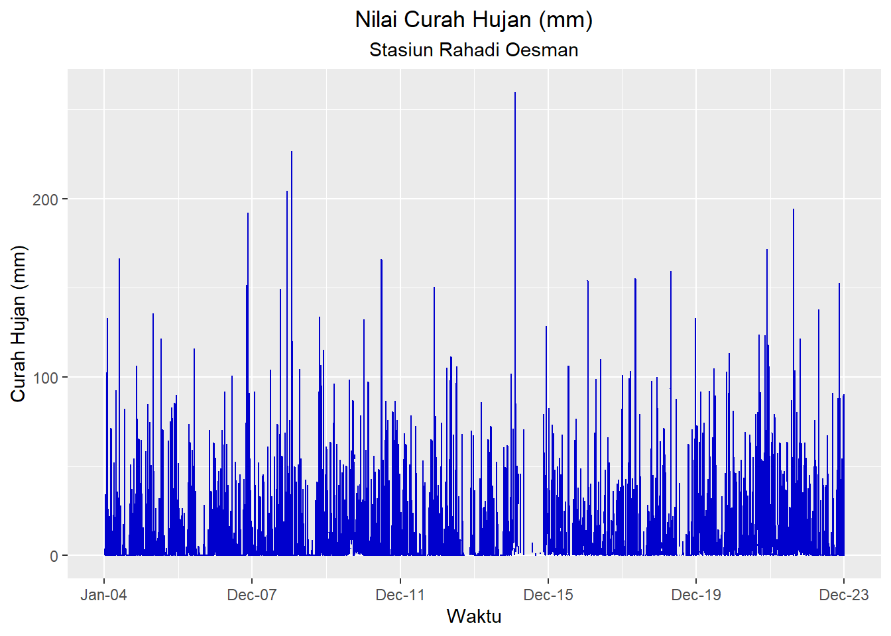
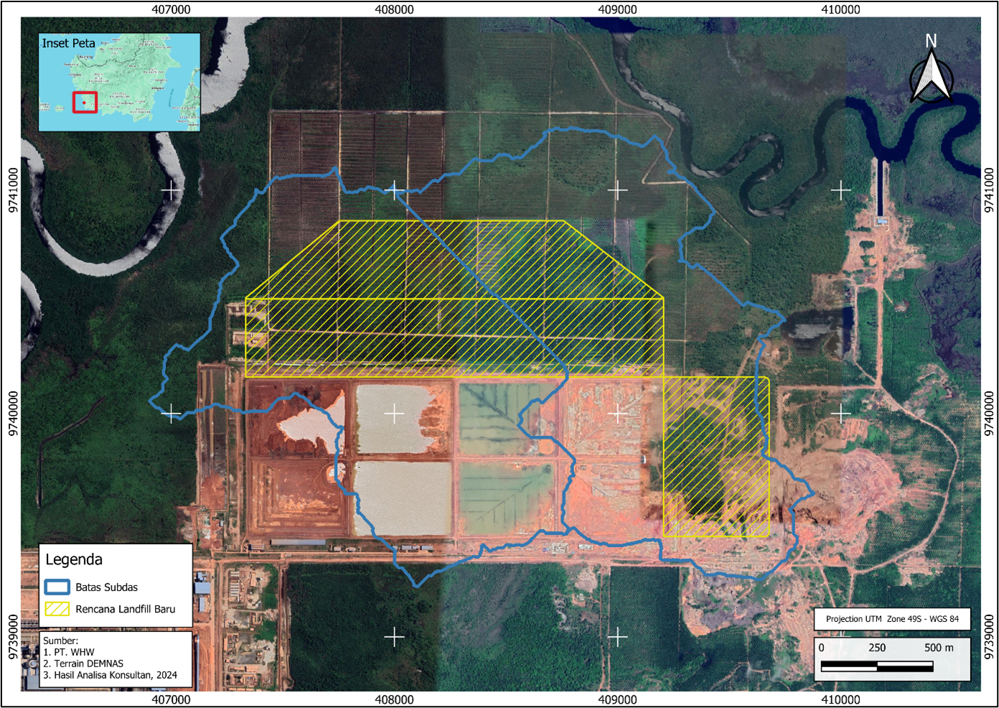
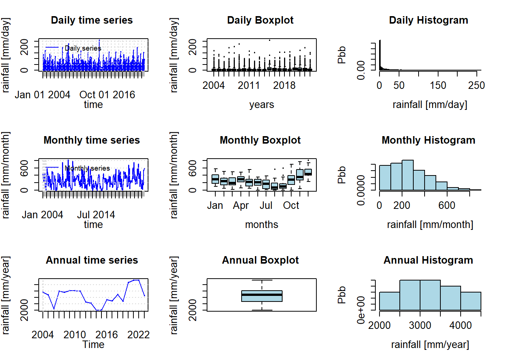
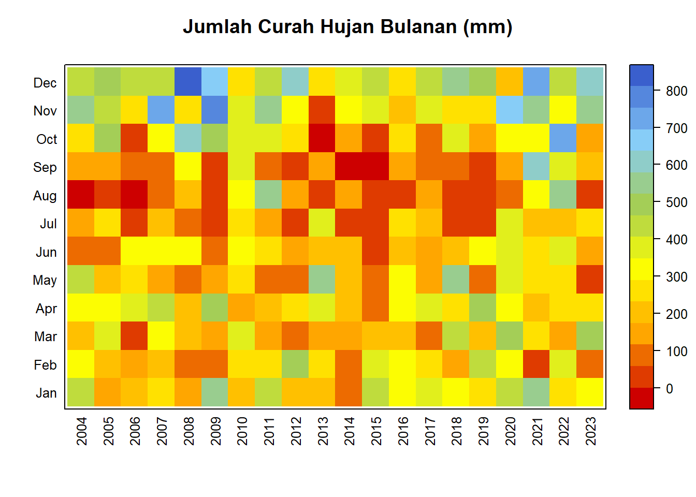
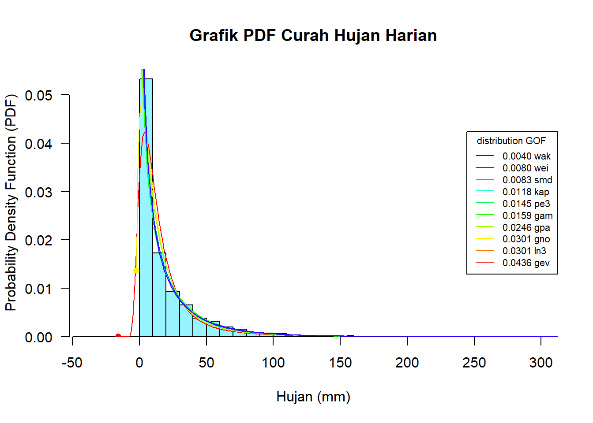
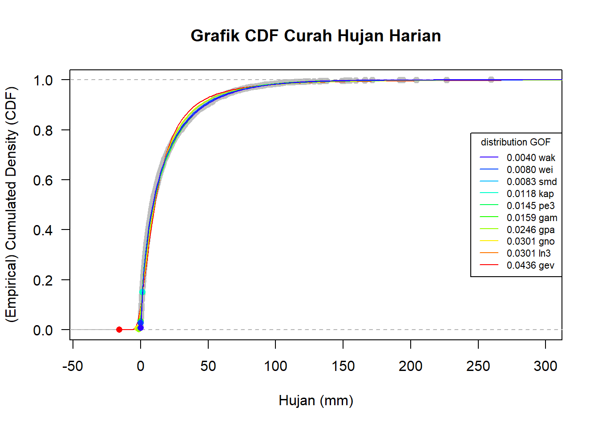
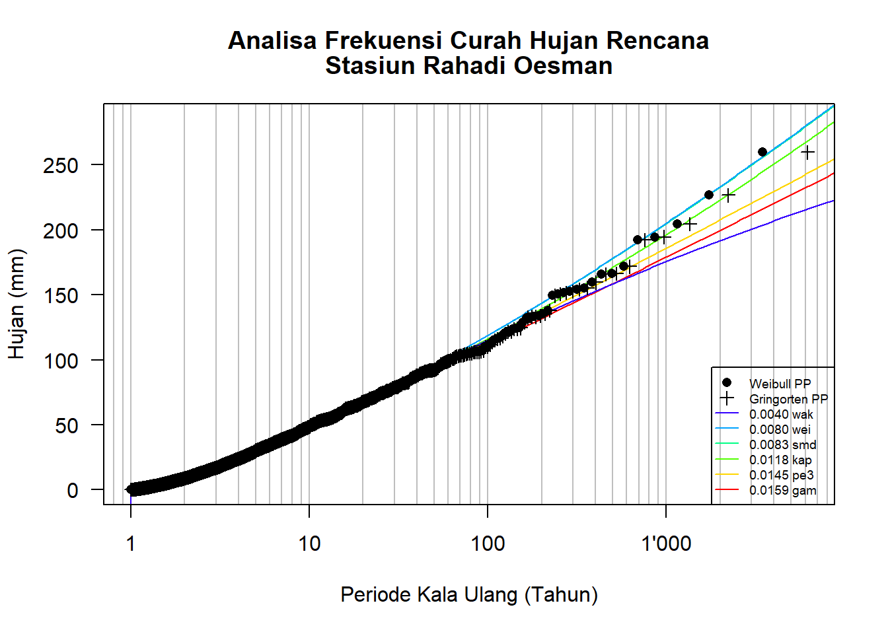
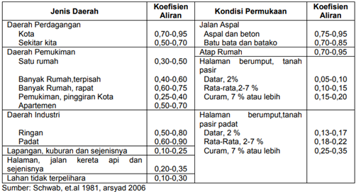
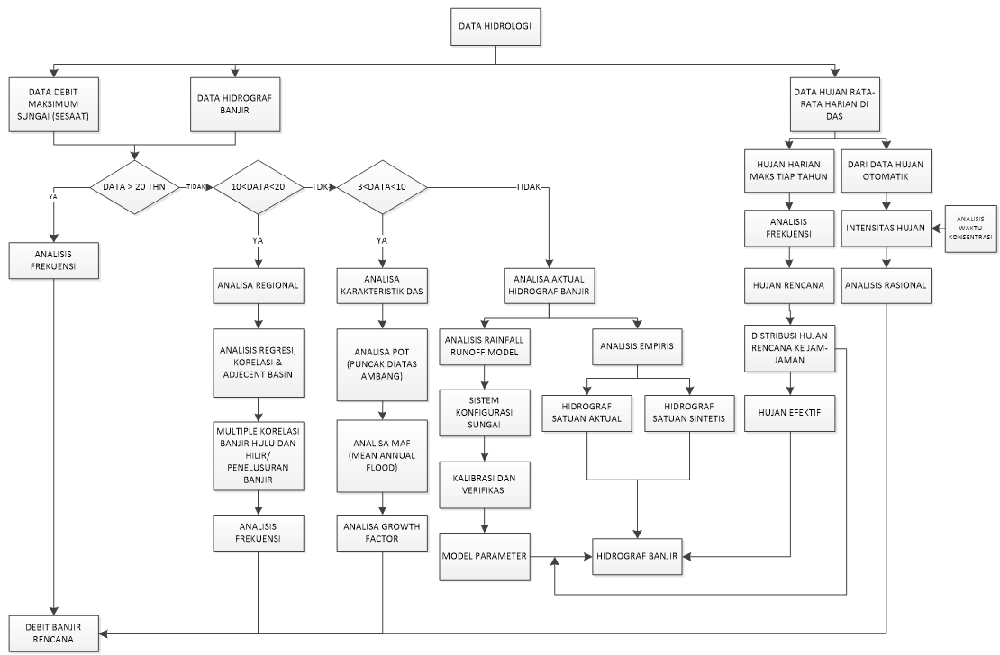

Kajian Banjir 100 Tahunan Landfill B3 PT. Well Harvest Wining
Kecamatan Kendawangan, Kabupaten Ketapang, Provinsi Kalimantan Barat.
1 Umum
Salah satu persyaratan yang harus dipenuhi dalam penentuan kelayakan lokasi landfill B3 PT. Well Harvest Wining di Kecamatan Kendawangan Kabupaten Ketapang, Provinsi Kalimantan Barat adalah kajian hidrologi tentang analisa bebas banjir. Lokasi landfill terpilih harus mempunyai resiko yang paling minimal terkena dampak akibat banjir, bahkan kalau bisa terbebas dari genangan akibat banjir.
Banjir merupakan peristiwa meluapnya air sungai melebihi palung sungai atau genangan air yang terjadi pada daerah yang rendah dan tidak bisa terdrainasikan (SNI 2415:2016 2016). Kajian mengenai banjir merupakan salah satu bagian yang penting dalam melakukan berbagai analisis, baik analisa untuk infrastruktur, saluran drainase, atau jembatan.
Dalam kajian banjir, besarnya (magnitude) debit didefinisikan sebagai kala ulang atau periode ulang. Dimana kala ulang merupakan waktu hipotetik dimana probabilitas kejadian debit atau hujan dengan besaran tertentu akan disamai atau dilampaui sekali dalam jangka waktu tersebut (Permen PUPR Nomor 12/PRT/M/2014 2014).
Untuk melakukan kajian bebas banjir ini terdiri dari dua tahapan analisa. Yang pertama adalah analisa hidrologi dimana output dari analisa ini adalah nilai debit banjir pada berbagai kala ulang. Tahapan yang kedua adalah analisa hidrolika dimana nilai debit banjir yang telah dihitung tadi dimodelkan/disimulasikan hingga memperoleh tinggi muka air banjir serta karakteristik hidrolik lainnya seperti kecepatan dan luas genangan.
2 Kriteria Desain dan Aturan Terkait
Sebagai panduan (guidelines) dalam melakukan kajian banjir ini didasarkan pada beberapa aturan dan jurnal terkait sebagai berikut:
Undang-undang No. 17 Tahun 2019 Tentang Sumber Daya Air
SNI 2415:2016 Tentang Tata Cara Perhitungan Debit Banjir Rencana
SNI 7746:2012 Tentang Tata Cara Perhitungan Hujan Maksimum Boleh Jadi Dengan Metode Hersfield
SNI 1724:2015 Tentang Analisis Hidrologi, Hidraulik, dan Kriteria Desain Bangunan Sungai
Natakusumah, D. K., Hatmoko, W., & Harlan, D. (2011). Prosedur Umum Perhitungan Hidrograf Satuan Sintetis dengan Cara ITB dan Beberapa Contoh Penerapannya. JurnalTeknik Sipil, 18(3), 251. https://doi.org/10.5614/jts.2011.18.3.6
3 Ketersediaan Data
Untuk melakukan kajian bebas banjir ini diperlukan data-data primer maupun sekunder yang dikumpulkan untuk kemudian diolah dan dianalisis sehingga menghasilkan informasi yang memadai sebagai dasar dari laporan hidrologi. Data primer didapatkan dari pengambilan data langsung di lapangan saat tahap pekerjaan lapangan berlangsung, sedangkan data sekunder didapatkan dari sumber lain yang telah ada sebelumnya. Rangkuman data yang digunakan pada penelitian ini baik primer maupun sekunder ditampilkan dalam Tabel 1 berikut:
| No | Data | Jenis Data | Sumber Data |
|---|---|---|---|
| 1 | Data topografi | Data Primer | Pengukuran Topografi |
| 2 | Data Batas Landfill | Data Primer | PT. Well Harvest Wining |
| 3 | Digital Elevation Model (DEM) | Data Sekunder | DEMNAS |
| 4 | Data Hujan Stasiun Rahadi Oesman | Data Sekunder | BMKG |
| 5 | Data Tutupan Lahan | Data Sekunder | KLHK |
| 6 | Data pengamatan pasang surut harian di Sungai Tengar | Data Primer | PT. Well Harvest Wining |
4 Catchment Area (CA)
Untuk dapat menghitung debit banjir, diperlukan 2 (dua) inputan data utama. Input yang pertama adalah karakteristik dari catchment area (CA) yang ditinjau seperti luasan, panjang sungai, dan kemiringan sungai. Kemudian input kedua yang diperlukan adalah curah hujan rencana.
Untuk data karakteristik CA diperoleh dari deliniasi peta rupa bumi Indonesia (RBI). Hasil deliniasi menunjukkan terdapat satu CA di sekitar tapak proyek dengan luasan 32.01 Ha. Gambar CA dapat dilihat pada Gambar 1 dibawah ini.

5 Data dan Analisa Curah Hujan
5.1 Kondisi Curah Hujan
Data hujan yang digunakan mempunyai panjang waktu pengamatan selama 20 Tahun dari tahun 2002 hingga tahun 2023 yang bersumber pada BMKG. Berikut ditampilkan lokasi dan data curah hujan maksimum harian serta jumlah curah hujan bulanan rata-rata berupa tabel dan grafik pada stasiun tersebut.


| Tahun | Jan | Feb | Mar | Apr | May | Jun | Jul | Aug | Sep | Oct | Nov | Dec |
|---|---|---|---|---|---|---|---|---|---|---|---|---|
| 2004 | 419.4 | 301.8 | 222.3 | 341.8 | 457.1 | 80.2 | 165.6 | 0.0 | 149.2 | 256.4 | 572.0 | 438.2 |
| 2005 | 121.1 | 180.1 | 377.9 | 342.2 | 210.6 | 95.0 | 285.9 | 15.8 | 157.5 | 490.1 | 459.4 | 477.7 |
| 2006 | 194.7 | 168.3 | 21.3 | 379.6 | 270.2 | 295.3 | 6.8 | 0.3 | 61.2 | 26.8 | 270.0 | 442.1 |
| 2007 | 242.7 | 216.4 | 296.9 | 416.6 | 151.5 | 346.9 | 207.6 | 95.3 | 83.8 | 293.4 | 732.4 | 422.0 |
| 2008 | 171.9 | 112.6 | 209.8 | 225.3 | 113.9 | 290.7 | 66.1 | 224.2 | 307.9 | 607.2 | 265.8 | 810.9 |
| 2009 | 574.1 | 111.7 | 160.2 | 483.6 | 128.1 | 85.3 | 10.7 | 15.3 | 44.8 | 512.9 | 764.4 | 650.8 |
| 2010 | 228.3 | 252.2 | 366.2 | 130.1 | 259.0 | 305.0 | 289.2 | 312.7 | 350.9 | 397.7 | 378.3 | 274.9 |
| 2011 | 424.5 | 232.4 | 156.9 | 220.3 | 103.7 | 277.2 | 129.0 | 560.6 | 72.3 | 377.0 | 526.8 | 424.7 |
| 2012 | 177.3 | 503.7 | 65.6 | 289.3 | 72.4 | 123.6 | 58.3 | 146.0 | 11.2 | 256.1 | 308.2 | 633.5 |
| 2013 | 175.0 | 278.9 | 116.8 | 366.0 | 551.8 | 187.1 | 383.5 | 56.0 | 146.5 | 0.0 | 44.2 | 262.8 |
| 2014 | 100.3 | 77.3 | 132.6 | 178.0 | 231.7 | 193.5 | 37.4 | 139.1 | 0.0 | 174.1 | 341.7 | 401.1 |
| 2015 | 410.7 | 397.5 | 186.0 | 60.3 | 99.6 | 4.3 | 32.5 | 8.4 | 0.0 | 57.1 | 348.1 | 434.1 |
| 2016 | 310.4 | 315.0 | 207.5 | 294.7 | 309.1 | 183.3 | 284.1 | 21.2 | 167.8 | 281.0 | 212.3 | 250.9 |
| 2017 | 362.9 | 253.2 | 100.7 | 352.1 | 171.4 | 159.8 | 212.0 | 160.1 | 81.1 | 106.3 | 359.6 | 408.0 |
| 2018 | 293.0 | 164.9 | 423.5 | 241.6 | 555.3 | 224.0 | 21.0 | 20.1 | 82.5 | 393.3 | 271.2 | 538.4 |
| 2019 | 243.3 | 429.2 | 175.5 | 482.5 | 102.5 | 291.7 | 45.6 | 15.4 | 15.1 | 147.7 | 260.5 | 490.6 |
| 2020 | 449.1 | 324.0 | 472.9 | 338.1 | 403.8 | 352.2 | 382.8 | 97.3 | 126.1 | 338.7 | 666.7 | 230.5 |
| 2021 | 577.7 | 49.0 | 253.1 | 200.8 | 245.3 | 254.4 | 223.0 | 323.5 | 596.8 | 321.5 | 574.7 | 732.2 |
| 2022 | 284.7 | 403.9 | 167.9 | 274.3 | 280.6 | 348.9 | 178.4 | 565.7 | 405.2 | 695.9 | 325.6 | 434.9 |
| 2023 | 322.9 | 109.7 | 496.7 | 282.1 | 52.8 | 135.7 | 260.2 | 34.0 | 182.1 | 147.7 | 537.8 | 585.7 |
Dari Tabel 2 diatas dapat dilihat bahwa hujan yang paling banyak adalah 810.9 mm/bulan.
5.2 Analisa Frekuensi
Analisa curah hujan maksimum rencana di Lokasi pekerjaan dilakukan dengan metoda statistik. Sebararan teoritis yang digunakan dalam analisis frekuensi dari berbagai distribusi, yaitu sebaran teoritis distribusi Normal, Log-Normal 2 parameter, Log-Pearson tipe III, dan Gumbel. Berikut ini diuraikan formula untuk menentukan kedalaman hujan periode ulang tertentu untuk setiap distribusi frekuensi hujan.
5.2.1 Distribusi Normal
Distribusi normal adalah simetris terhadap sumbu vertikal dan berbentuk lonceng yang juga disebut distribusi Gauss. Distribusi normal mempunyai dua parameter yaitu rata-rata µ dan deviasi standar s dari populasi. Dalam praktek, nilai rata-rata \(\hat{x}\) dan deviasi standar s diturunkan dari data sampel untuk menggantikan µ dan s. Persamaan distribusi normal adalah sebagai berikut:
\[ \displaylines{ \mathrm{X}_{T}^{}=\overline{X}+S.K \\ \overline{X}=\frac{1}{n}\sum_{i=1}^{n}.X{i} \\ S=\sqrt{\frac{\sum_{i=1}^{n}(X{i}-\overline{X})^{2}}{n-1}} \\ } \]
dimana :
XT = Kedalaman hujan untuk periode ulang T tahun (mm).
T =Periode ulang (tahun).
\(\overline{X}\) = Kedalaman hujan rata-rata (mm).
n = Jumlah data.
S = Standar deviasi (mm).
K = Faktor dari Tabel Z distribusi normal
5.2.2 Distribusi Log-Normal
Untuk frekuensi hujan yang mengikuti distribusi Log-normal, kedalaman hujan periode ulang T dapat ditentukan sebagai berikut:
\[ \displaylines{ L_{n}X_{t}=\overline{L_{n}X}+S_{LnXi}K_{T} \\\overline{L_{n}X}=\frac{1}n{L_{n}X_{i}} \\S_{LnXi}=\sqrt{\frac{\sum_{i=n}^{n}(L_{n}X_{i})^2}{n-1}} } \]
dimana :
LnXT = Kedalaman hujan untuk periode ulang T tahun (mm).
T =Periode ulang (tahun).
\(\overline{LnX}\) = Kedalaman hujan rata-rata (mm).
n = Jumlah data.
\(S_{LnXi}\) = Standar deviasi dari Log Xi (mm).
KT = Faktor dari Tabel Z distribusi normal
5.2.3 Distribusi Log Pearson III
Jika distribusi frekuensi hujan mengikuti distribusi Log-Pearson Tipe III, maka kedalaman hujan periode ulang T dapat ditentukan sebagai berikut:
\[ \displaylines{ L_{n}X_{t}=\overline{L_{n}X}+S_{LnXi}G \\\overline{L_{n}X}=\frac{1}n{L_{n}X_{i}} \\S_{LnXi}=\sqrt{\frac{\sum_{i=n}^{n}(L_{n}X_{i})^2}{n-1}} \\G=f(C_{s},T) \\C_{s}=\frac{n\sum_{i=n}^{n}(L_{n}X_{i}-\overline{L_{n}X})^3}{(n-1)(n-2)S_{LnXi^3}} } \] dimana :
LnXT = log Kedalaman hujan untuk periode ulang T tahun (mm).
T =Periode ulang (tahun).
\(\overline{LnX}\) = Kedalaman hujan rata-rata (mm).
n = Jumlah data.
\(S_{LnXi}\) = Standar deviasi dari Log Xi (mm).
G = Faktor frekuensi
\(C_{s}\) = koefisien kemencengan data Log Xi
5.2.4 Distribusi Gumbel
Jika distribusi frekuensi hujan mengikuti distribusi Gumbel, maka kedalaman hujan periode ulang T dapat ditentukan sebagai berikut:
\[ \displaylines{ \mathrm{X}_{T}^{}=\overline{X}+S.K \\ \overline{X}=\frac{1}{n}\sum_{i=1}^{n}.X{i} \\ S=\sqrt{\frac{\sum_{i=1}^{n}(X{i}-\overline{X})^{2}}{n-1}} \\ K=\frac{Y_{T}-Y_{n}}{S_{n}} \\ Y_{T}=-l_{n}(-ln\frac{T-1}{T}) } \]
dimana :
XT = Kedalaman hujan untuk periode ulang T tahun (mm).
T =Periode ulang (tahun).
\(\overline{X}\) = Kedalaman hujan rata-rata (mm).
n = Jumlah data.
S = Standar deviasi (mm).
K = Faktor frekuensi
YT = Reduced variate
Yn = Reduced mean (sebagai fungsi dari banyaknya data n)
Sn = Reduced standard deviation (sebagai fungsi dari banyaknya data n)
5.2.5 Ringkasan Analisa Desain Curah Hujan
Rekapitulasi Hasil perhitungan distribusi curah hujan rencana untuk perioda ulang 2, 5, 10, 20, 25, 50, 100, 200 dan 1000 tahun dengan berbagai metode dapat dilihat pada Tabel dan Gambar Berikut.



| Type of Distribution | RP.2 | RP.5 | RP.10 | RP.20 | RP.25 | RP.50 | RP.100 |
|---|---|---|---|---|---|---|---|
| wak | 8.953818 | 29.41748 | 48.27300 | 68.34702 | 74.90544 | 95.23492 | 115.15629 |
| wei | 9.279038 | 28.89767 | 46.80335 | 66.69365 | 73.46292 | 95.50439 | 118.94042 |
| smd | 9.288296 | 28.91482 | 46.80970 | 66.67657 | 73.43583 | 95.43910 | 118.82661 |
| kap | 9.076838 | 29.43910 | 47.44952 | 66.86460 | 73.36561 | 94.26981 | 116.20468 |
| pe3 | 8.956096 | 29.67246 | 47.94571 | 67.36144 | 73.78058 | 94.10860 | 114.89226 |
| gam | 9.360260 | 30.09015 | 47.85907 | 66.53671 | 72.68366 | 92.08685 | 111.85303 |
| gpa | 9.866221 | 27.70952 | 44.18888 | 63.77478 | 70.83459 | 95.44349 | 124.69145 |
| gno | 9.988723 | 27.17990 | 43.67486 | 63.81491 | 71.16219 | 96.95122 | 127.68369 |
| ln3 | 9.988723 | 27.17990 | 43.67486 | 63.81491 | 71.16219 | 96.95122 | 127.68369 |
| gev | 10.534169 | 26.02603 | 40.90038 | 60.03553 | 67.34909 | 94.56973 | 130.32211 |
| glo | 10.772391 | 25.63150 | 39.79219 | 58.36251 | 65.58543 | 93.05690 | 130.39417 |
| exp | 11.447274 | 31.77960 | 47.16041 | 62.54122 | 67.49274 | 82.87355 | 98.25436 |
| pdq3 | 10.802647 | 24.24156 | 39.62800 | 62.42488 | 71.60821 | 105.88617 | 147.71845 |
| lap | 10.130178 | 23.74385 | 34.04220 | 44.34054 | 47.65587 | 57.95421 | 68.25256 |
| gum | 14.883654 | 33.02594 | 45.03770 | 56.55968 | 60.21461 | 71.47370 | 82.64966 |
| ray | 15.962143 | 34.60177 | 45.23595 | 54.35703 | 57.06287 | 64.91744 | 72.10187 |
| nor | 18.256283 | 34.80695 | 43.45827 | 50.60268 | 52.68390 | 58.64370 | 64.00442 |
| pdq4 | 18.256283 | 32.00714 | 41.61332 | 51.64098 | 54.96391 | 65.51103 | 76.29143 |
| revgum | 21.628911 | 35.11281 | 40.84553 | 45.05776 | 46.20772 | 49.32936 | 51.94044 |
| rice | 17.150632 | 26.13392 | 31.25901 | 35.65487 | 36.95894 | 40.74442 | 44.20692 |
| empirical | 8.800000 | 29.94000 | 48.52333 | 67.69500 | 74.04400 | 92.37400 | 110.38500 |
| quantileMean | 8.800000 | 29.89583 | 48.50370 | 67.67292 | 73.80883 | 92.27822 | 110.23897 |
| weighted1 | 10.912927 | 28.90252 | 44.46063 | 61.96760 | 68.05857 | 88.52037 | 111.52307 |
| weighted2 | 10.876264 | 28.89198 | 44.49345 | 62.05658 | 68.16804 | 88.70067 | 111.78546 |
| weighted3 | 9.499003 | 28.52362 | 45.89731 | 65.53547 | 72.33837 | 95.03498 | 120.29618 |
| weightedc | NA | NA | NA | NA | NA | NA | NA |
| n_full | 3454.000000 | NA | NA | NA | NA | NA | NA |
| n | 3454.000000 | NA | NA | NA | NA | NA | NA |
| threshold | 0.100000 | NA | NA | NA | NA | NA | NA |
5.2.6 Penentuan Distribusi Hujan
Selanjutnya setelah dilakukan analisa frekuensi dilakukan uji kesesuaian distribusi yang dimaksudkan untuk mengetahui kebenaran analisa curah hujan baik terhadap simpangan data vertikal ataupun simpangan data horisontal.
Uji kesesuaian distribusi frekuensi digunakan untuk menguji apakah pemilihan distribusi yang digunakan dalam perhitungan curah hujan rencana diterima atau ditolak, maka perlu dilakukan uji kesesuaian distribusi baik secara statistik maupun simpangan terkecil. Untuk uji simpangan digunakan metode Chi Square dan metode Smirnov Kolmogorof.
5.3 Koefisien Limpasan
Hasil dari curah hujan rencana masih merupakan hujan total, sedangkan untuk menghitung debit banjir diperlukan nilai hujan efektif, artinya sudah dikurangi dengan infiltrasi lahan yang ada. Berbagai macam cara untuk menghitung hujan efektif, pada pekerjaan ini metode yang digunakan adalah metode Koefisien C atau koefisien limpasan. Karena pada lokasi yang ditinjau sebagian besar merpakan area tegalan/ladang, maka diasumsikan masuk dalam kategori daerah lahan tidak terpelihara (lihat Tabel 4). Dengan demikian nilai C yang diambil adalah 0.3.

5.4 Hujan Efektif
6 Analisa Debit Banjir
6.1 Bagan Alir Perhitungan Debit Banjir
Berdasarkan SNI 2415-2016 tentang “Tata Cara Perhitungan Debit Banjir Rencana”, bagan alir perhitungan banjir dapat dilihat pada Gambar 9 yang memperlihatkan prosedur umum yang diperlukan untuk menghitung debit banjir berdasarkan ketersediaan data di lapangan.

Karena ketersediaan data dengan rentang panjang yang berada di lokasi hanyalah data hujan maksimum harian selama 20 Tahun serta luasan CA yang kurang dari 50 Km2, maka prosedur yang dilakukan berdasarkan bagan alir diatas adalah: pengumpulan data hujan harian maksimum tiap tahun pencatatan, analisa frekuensi, intensitas hujan, analisa rasional, dan terakhir memperoleh debit banjir rencana.
6.2 Debit Banjir di Lokasi Proyek
Perhitungan debit banjir di lokasi proyek menggunakan metode yang disarankan oleh SNI 2415:2016 Tentang Tata Cara Perhitungan Debit Banjir yaitu metode hidrograf Snyder. Persamaan dari hidrograf satuan sintetik Snyder-Alexesey sebagai berikut:
Menentukan lag-time
tp = 1. 1 – 1. 4(L. Lg) 0.3 dalam jam
dimana:
tp = log-time dan titik berat hujan efektif selama tr ke puncak Hidrograph dalam jam
L = jarak dari stasiun ke batas teratas dari daerah pengaliran dalam km
Lg =jarak dari stasiun ke titik berat daerah pengaliran dalam km
Lama hujan efektif
Tp1 = tp + 0. 25(tr – te)
Rise to peak
Tp = tp +0. 5. tr
Peak discharge (l/det), untuk hujan efektif 1 mm pada 1 km2
\[ \displaylines{ \mathrm{q}_{p}^{}={\frac{275.{C}_{p}}{tp}}\\ } \]
Peak discharge untuk hujan efektif 1 inci (25. 4 mm) pada daerah seluas A km2, dalam m2/det
Setelah didapat bentuk hidrograph satuannya, maka dilakukan perhitungan debit banjir akibat hujan rencana.
6.3 Debit Banjir di Sungai Tengar
7 Analisa Hidrolika
Daftar Pustaka
Permen PUPR Nomor 12/PRT/M/2014. 2014. “Permen PUPR Nomor 12/PRT/m/2014 Tentang Penyelenggaran Sistem Drainase Perkotaan.”
SNI 2415:2016. 2016. “SNI 2415:2016 Tata Cara Perhitungan Debit Banjir Rencana.”